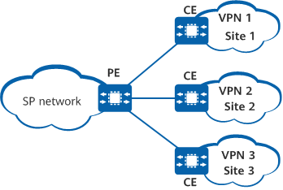

Multi-VPN-instance customer edge (MCE) technology provides logically independent VPN instances and address spaces on a CE, allowing multiple VPN users to share the same CE. The MCE technology provides an economical and easy-to-use solution to solve problems concerned with VPN service isolation and security.
VPN services are becoming increasingly refined and the demand for VPN service security is growing. As such, carriers must isolate different types of VPN services on networks to meet this demand. Deploying a separate CE for each VPN to connect to upper-layer devices results in high cost and complex deployment. Deploying the same CE for multiple VPNs to connect to upper-layer devices poses data security risks, since these VPNs use the same routing and forwarding table. To tackle issues regarding network cost and data security when multiple VPNs are deployed, MCE technology can be used.

The MCE technology creates a VPN instance for each VPN service to be isolated. Each VPN uses an independent routing protocol to communicate with the MCE to which these VPNs are connected. A VPN instance is bound to each link between the MCE (interface or sub-interface) and the PE (interface or sub-interface) to which the MCE is bound. As a result, a separate channel is established for each VPN service, and different VPN services are isolated.
As shown in Figure 2, three VPN instances are configured on the MCE: VPN 1, VPN 2, and VPN 3. Three separate VPN instance routing and forwarding tables are created on the MCE accordingly. On the MCE, the interface connected to site 1 is bound to VPN 1, the interface connected to site 2 is bound to VPN 2, and the interface connected to site 3 is bound to VPN 3. In addition, the three interfaces connected to the PE are bound to corresponding VPN instances. These configurations allow VPN services to be isolated using only one MCE.